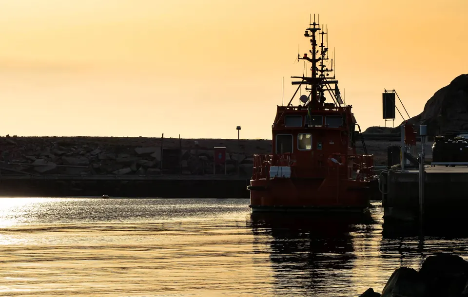
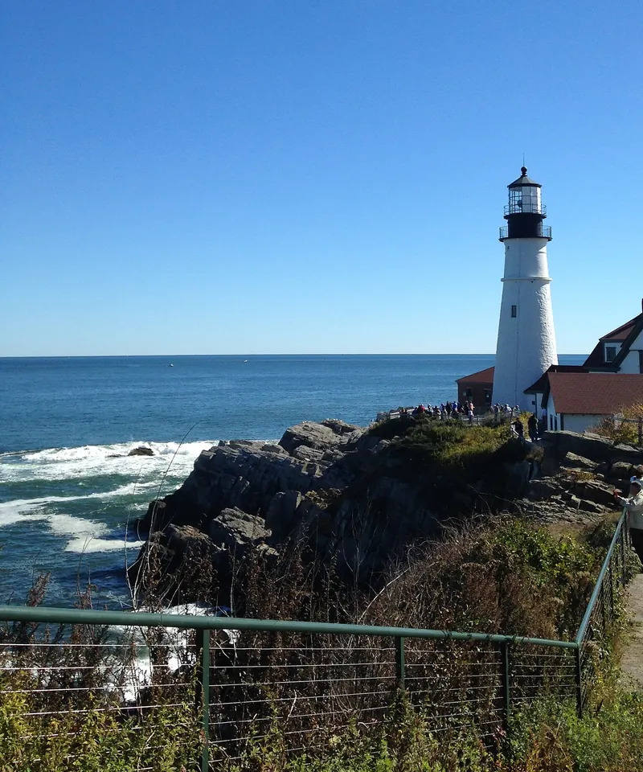
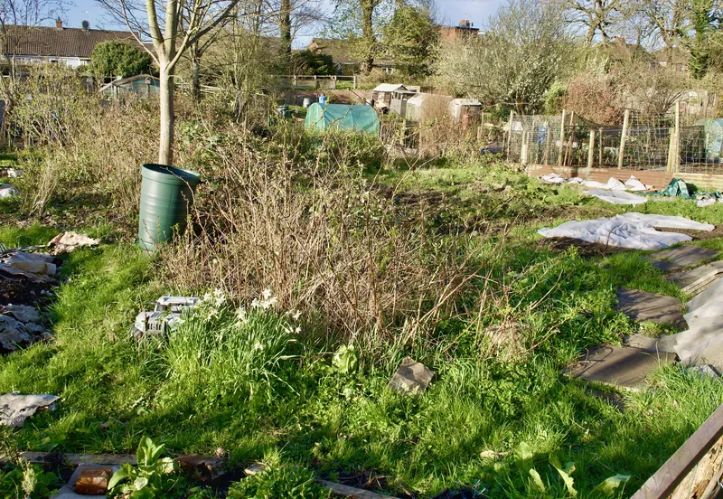
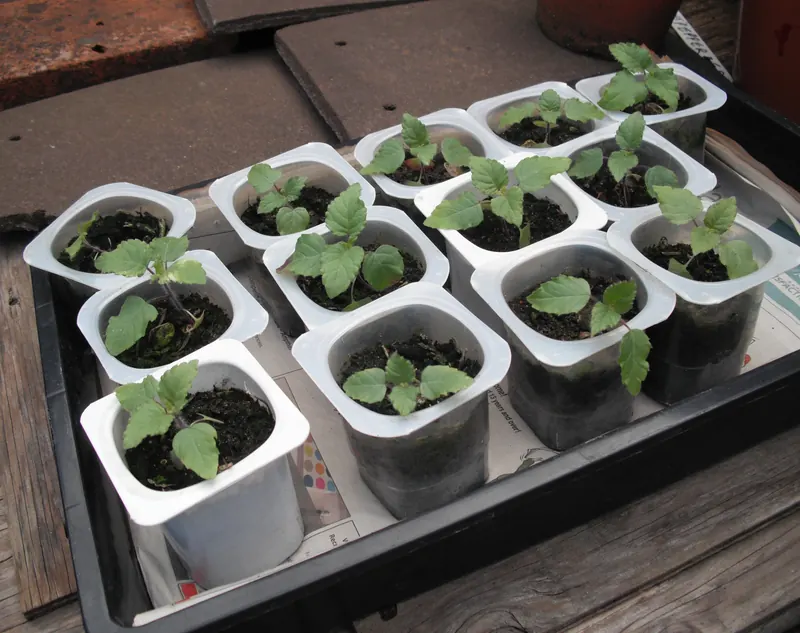
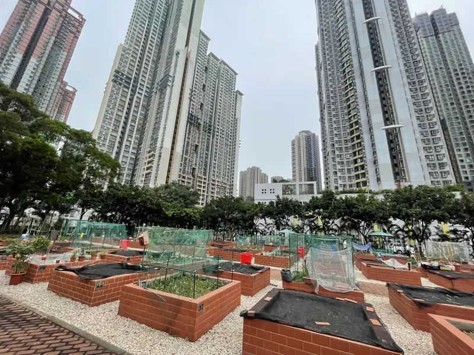
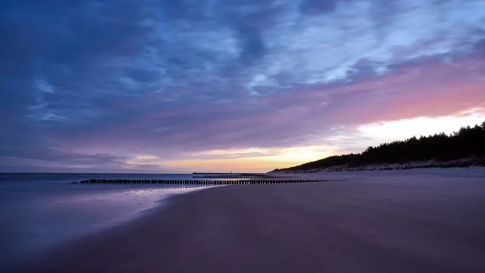

Credits
Credits and licences
Who made the photographs and typefaces on this demonstration website, and the licences that allow them to be used here.
Photography
Every photograph is released under the CC0 1.0 public domain dedication by the photographer named below. Each one was checked individually on its own Wikimedia Commons page (licence, author's declaration or licence review, and no deletion or copyright notices), then downloaded, cropped, resized and stored with this website. No image is loaded from another site. The photographs show real places for mood only: none of them shows Kindred Harbor, which is fictional, and no identifiable people appear.
| Used for | Original (Wikimedia Commons) | Creator | Licence | Changes | Retrieved |
|---|---|---|---|---|---|
 |
Two pilot boats at golden hour in Fiskebäcksvik.jpg | W.carter | CC0 1.0 (own work) | cropped, resized and re-encoded (AVIF/WebP); metadata removed; mirrored horizontally so the headline sits over open sky and water | |
 |
Portland Head Lighthouse in October.jpeg | JaqNotJill | CC0 1.0 (own work) | cropped, resized and re-encoded (AVIF/WebP); metadata removed; cropped to exclude distant walkers at the right edge | |
 |
Fulford Cross allotments Mar26 03.jpg | Malcolmxl5 | CC0 1.0 (own work) | cropped, resized and re-encoded (AVIF/WebP); metadata removed | |
 |
ScarletSageYogurtPots.JPG | Simon Speed | CC0 1.0 (own work) | cropped, resized and re-encoded (AVIF/WebP); metadata removed | |
 |
Yuk Nga Lane Community Garden.jpg | Msh.spike | CC0 1.0 (own work) | cropped, resized and re-encoded (AVIF/WebP); metadata removed | |
 |
Sunrise on the beach (49336223491).jpg | Radek Kucharski from Warsaw, Poland | CC0 1.0 (Flickr licence review passed (cc-zero)) | cropped, resized and re-encoded (AVIF/WebP); metadata removed | |
 |
Boats in Reykjavik's Old Harbour.JPG | Ypsilon from Finland | CC0 1.0 (own work) | cropped, resized and re-encoded (AVIF/WebP); metadata removed |


.jpg){kind=link}

The same information, with revision numbers and file lists, is available as machine-readable data.
Typefaces
- Fraunces, copyright 2018 The Fraunces Project Authors. SIL Open Font License 1.1: licence text.
- DM Sans, copyright 2014 The DM Sans Project Authors. SIL Open Font License 1.1: licence text.
The fonts are hosted with this website; no font service is contacted.
About this website
Kindred Harbor, Gull's Reach, the programs, people, places, figures and contact details are invented for this demonstration by Stacked Alchemist. Illustrations of shelves and the Lantern Rides car are drawn for this site.